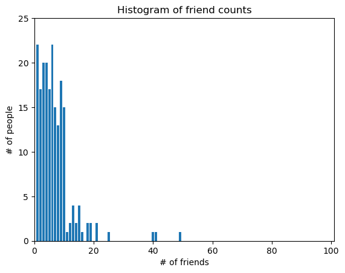

Data Science from Scratch 2e#
[ g ] Grus, Joel. (2019). Data Science from Scratch. 2e. O’Reilly.
Programming Environment#
from collections import Counter, defaultdict
import math
from typing import Callable, List, Tuple
Vector = List[float]
Matrix = List[Vector] # List[List[float]]
import matplotlib.pyplot as plt
[01] Introduction#
users = [
{ "id" : 0, "name" : "Hero" },
{ "id" : 1, "name" : "Dunn" },
{ "id" : 2, "name" : "Sue" },
{ "id" : 3, "name" : "Chi" },
{ "id" : 4, "name" : "Thor" },
{ "id" : 5, "name" : "Clive" },
{ "id" : 6, "name" : "Hicks" },
{ "id" : 7, "name" : "Devin" },
{ "id" : 8, "name" : "Kate" },
{ "id" : 9, "name" : "Klein" },
]
friendship_pairs = [
(0, 1),
(0, 2),
(1, 2),
(1, 3),
(2, 3),
(3, 4),
(4, 5),
(5, 6),
(5, 7),
(6, 8),
(7, 8),
(8, 9),
]
# initialize the dict with an empty list for each user id
friendships = {user['id'] : [] for user in users}
friendships
{0: [], 1: [], 2: [], 3: [], 4: [], 5: [], 6: [], 7: [], 8: [], 9: []}
# loop over the friendship pairs to populate the list
for i, j in friendship_pairs:
friendships[i].append(j) # add j as a friend of user i
friendships[j].append(i) # add i as a friend of user j
friendships
{0: [1, 2],
1: [0, 2, 3],
2: [0, 1, 3],
3: [1, 2, 4],
4: [3, 5],
5: [4, 6, 7],
6: [5, 8],
7: [5, 8],
8: [6, 7, 9],
9: [8]}
# What's the average number of connections?
def number_of_friends (user):
"""How many friends does user have?"""
user_id = user['id']
friend_ids = friendships[user_id]
return len(friend_ids)
total_connections = sum(number_of_friends(user)
for user in users)
print(f"{'Total connections':<20} : {total_connections}")
num_users = len(users)
avg_connections = total_connections / num_users
print(f"{'Average connections':<20} : {avg_connections}")
Total connections : 24
Average connections : 2.4
# Who are the most connected users?
# (user_id, number_of_friends)
num_friends_by_id = [(user['id'], number_of_friends(user))
for user in users]
num_friends_by_id.sort(
key =lambda id_and_friends: id_and_friends[1],
reverse=True)
num_friends_by_id
[(1, 3),
(2, 3),
(3, 3),
(5, 3),
(8, 3),
(0, 2),
(4, 2),
(6, 2),
(7, 2),
(9, 1)]
def foaf_ids_bad (user):
"""foaf is short for "friend of a friend" """
return [foaf_id
for friend_id in friendships[user['id']]
for foaf_id in friendships[friend_id]]
foaf_ids_bad(users[0])
[0, 2, 3, 0, 1, 3]
def friends_of_friends (user):
user_id = user['id']
return Counter(
foaf_id
for friend_id in friendships[user_id] # for each of my friends
for foaf_id in friendships[friend_id] # find their friends
if foaf_id != user_id # who aren't me
and foaf_id not in friendships[user_id] # and aren't my friends
)
friends_of_friends(users[0])
Counter({3: 2})
interests = [
(0, "Hadoop"), (0, "Big Data"), (0, "HBase"), (0, "Java"),
(0, "Spark"), (0, "Storm"), (0, "Cassandra"),
(1, "NoSQL"), (1, "MongoDB"), (1, "Cassandra"), (1, "HBase"),
(1, "Postgres"), (2, "Python"), (2, "scikit-learn"), (2, "scipy"),
(2, "numpy"), (2, "statsmodels"), (2, "pandas"), (3, "R"), (3, "Python"),
(3, "statistics"), (3, "regression"), (3, "probability"),
(4, "machine learning"), (4, "regression"), (4, "decision trees"),
(4, "libsvm"), (5, "Python"), (5, "R"), (5, "Java"), (5, "C++"),
(5, "Haskell"), (5, "programming languages"), (6, "statistics"),
(6, "probability"), (6, "mathematics"), (6, "theory"),
(7, "machine learning"), (7, "scikit-learn"), (7, "Mahout"),
(7, "neural networks"), (8, "neural networks"), (8, "deep learning"),
(8, "Big Data"), (8, "artificial intelligence"), (9, "Hadoop"),
(9, "Java"), (9, "MapReduce"), (9, "Big Data"),
]
def data_scientists_who_like (target_interest):
"""Find the ids of all users who like the target interest."""
return [user_id
for user_id, user_interest in interests
if user_interest == target_interest]
# keys are interests, values are lists of user_ids with that interest
user_ids_by_interest = defaultdict(list)
for user_id, interest in interests:
user_ids_by_interest[interest].append(user_id)
user_ids_by_interest
defaultdict(list,
{'Hadoop': [0, 9],
'Big Data': [0, 8, 9],
'HBase': [0, 1],
'Java': [0, 5, 9],
'Spark': [0],
'Storm': [0],
'Cassandra': [0, 1],
'NoSQL': [1],
'MongoDB': [1],
'Postgres': [1],
'Python': [2, 3, 5],
'scikit-learn': [2, 7],
'scipy': [2],
'numpy': [2],
'statsmodels': [2],
'pandas': [2],
'R': [3, 5],
'statistics': [3, 6],
'regression': [3, 4],
'probability': [3, 6],
'machine learning': [4, 7],
'decision trees': [4],
'libsvm': [4],
'C++': [5],
'Haskell': [5],
'programming languages': [5],
'mathematics': [6],
'theory': [6],
'Mahout': [7],
'neural networks': [7, 8],
'deep learning': [8],
'artificial intelligence': [8],
'MapReduce': [9]})
# keys are user_ids, values are lists of interests for that user_id
interests_by_user_id = defaultdict(list)
for user_id, interest in interests:
interests_by_user_id[user_id].append(interest)
interests_by_user_id
defaultdict(list,
{0: ['Hadoop',
'Big Data',
'HBase',
'Java',
'Spark',
'Storm',
'Cassandra'],
1: ['NoSQL', 'MongoDB', 'Cassandra', 'HBase', 'Postgres'],
2: ['Python',
'scikit-learn',
'scipy',
'numpy',
'statsmodels',
'pandas'],
3: ['R', 'Python', 'statistics', 'regression', 'probability'],
4: ['machine learning', 'regression', 'decision trees', 'libsvm'],
5: ['Python',
'R',
'Java',
'C++',
'Haskell',
'programming languages'],
6: ['statistics', 'probability', 'mathematics', 'theory'],
7: ['machine learning',
'scikit-learn',
'Mahout',
'neural networks'],
8: ['neural networks',
'deep learning',
'Big Data',
'artificial intelligence'],
9: ['Hadoop', 'Java', 'MapReduce', 'Big Data']})
# Who has the most interests in common with a given user?
def most_common_interests_with (user):
return Counter(
interested_user_id
for interest in interests_by_user_id[user['id']] # for each interest
for interested_user_id in user_ids_by_interest[interest] # iterate over the other users with that interest
if interested_user_id != user['id'] # who aren't me
)
salaries_and_tenures = [
(83000, 8.7),
(88000, 8.1),
(48000, 0.7),
(76000, 6.0),
(69000, 6.5),
(76000, 7.5),
(60000, 2.5),
(83000, 10.0),
(48000, 1.9),
(63000, 4.2),
]
salary_by_tenure = defaultdict(list)
for salary, tenure in salaries_and_tenures:
salary_by_tenure[tenure].append(salary)
average_salary_by_tenure = {
tenure : sum(salaries) / len(salaries)
for tenure, salaries in salary_by_tenure.items()
}
average_salary_by_tenure
{8.7: 83000.0,
8.1: 88000.0,
0.7: 48000.0,
6.0: 76000.0,
6.5: 69000.0,
7.5: 76000.0,
2.5: 60000.0,
10.0: 83000.0,
1.9: 48000.0,
4.2: 63000.0}
def tenure_bucket (tenure):
if tenure < 2:
return 'less than two'
elif tenure < 5:
return 'between two and five'
else:
return 'more than five'
salary_by_tenure_bucket = defaultdict(list)
for salary, tenure in salaries_and_tenures:
bucket = tenure_bucket(tenure)
salary_by_tenure_bucket[bucket].append(salary)
average_salary_by_bucket = {
tenure_bucket : sum(salaries) / len(salaries)
for tenure_bucket, salaries in salary_by_tenure_bucket.items()
}
average_salary_by_bucket
{'more than five': 79166.66666666667,
'less than two': 48000.0,
'between two and five': 61500.0}
words_and_counts = Counter(word
for user, interest in interests
for word in interest.lower().split())
words_and_counts
Counter({'big': 3,
'data': 3,
'java': 3,
'python': 3,
'learning': 3,
'hadoop': 2,
'hbase': 2,
'cassandra': 2,
'scikit-learn': 2,
'r': 2,
'statistics': 2,
'regression': 2,
'probability': 2,
'machine': 2,
'neural': 2,
'networks': 2,
'spark': 1,
'storm': 1,
'nosql': 1,
'mongodb': 1,
'postgres': 1,
'scipy': 1,
'numpy': 1,
'statsmodels': 1,
'pandas': 1,
'decision': 1,
'trees': 1,
'libsvm': 1,
'c++': 1,
'haskell': 1,
'programming': 1,
'languages': 1,
'mathematics': 1,
'theory': 1,
'mahout': 1,
'deep': 1,
'artificial': 1,
'intelligence': 1,
'mapreduce': 1})
for word, count in words_and_counts.most_common():
if count > 1:
print(word, count)
big 3
data 3
java 3
python 3
learning 3
hadoop 2
hbase 2
cassandra 2
scikit-learn 2
r 2
statistics 2
regression 2
probability 2
machine 2
neural 2
networks 2
[04] Linear algebra#
def add (v : Vector,
w : Vector) -> Vector:
assert len(v) == len(w), 'vectors must be the same length'
return [v_i + w_i for v_i, w_i in zip(v, w)]
def subtract (v : Vector,
w : Vector) -> Vector:
assert len(v) == len(w), 'vectors must be the same length'
return [v_i - w_i for v_i, w_i in zip(v, w)]
def vector_sum (vectors : List[Vector]) -> Vector:
"""Sums all corresponding elements."""
assert vectors, 'no vectors provided'
num_elements = len(vectors[0])
assert all(len(v) == num_elements for v in vectors), 'different sizes'
return [sum(vector[i] for vector in vectors)
for i in range(num_elements)]
def scalar_multiply (c : float,
v : Vector) -> Vector:
"""Multiplies every element by c."""
return [c * v_i for v_i in v]
def vector_mean (vectors : List[Vector]) -> Vector:
"""Computes the element-wise average."""
n = len(vectors)
return scalar_multiply(1/n, vector_sum(vectors))
def dot (v : Vector,
w : Vector) -> float:
"""Computes v_1 * w_1 + ... + v_n * w_n."""
assert len(v) == len(w), 'vectors must be the same length'
return sum(v_i * w_i for v_i, w_i in zip(v, w))
def sum_of_squares (v : Vector) -> float:
"""Returns v_1 * v_1 + ... + v_n * v_n."""
return dot(v, v)
def magnitude (v : Vector) -> float:
"""Returns the magnitude of v."""
return math.sqrt(sum_of_squares(v))
def squared_distance (v : Vector,
w : Vector) -> float:
"""Computes (v_1 - w_1) ** 2 + ... + (v_n - w_n) ** 2."""
return sum_of_squares(subtract(v, w))
def distance (v : Vector,
w : Vector) -> float:
"""Computes the distance between v and w."""
#return math.sqrt(squared_distance(v, w))
return magnitude(subtract(v, w))
def shape (A : Matrix) -> Tuple[int, int]:
"""Returns (# of rows of A, # of columns of A)."""
num_rows = len(A)
num_cols = len(A[0]) if A else 0 # number of elements in the first row
return num_rows, num_cols
def get_row (A : Matrix,
i : int) -> Vector:
"""Returns the i-th row of A (as a Vector)."""
return A[i]
def get_col (A : Matrix,
j : int) -> Vector:
"""Returns the j-th column of A (as a Vector)."""
return [A_i[j] # j-th element of row A_i
for A_i in A] # for each row A_i
def make_matrix (num_rows : int,
num_cols : int,
entry_fn : Callable[[int, int], float]) -> Matrix:
"""Returns a num_rows x num_cols matrix whose (i, j)-th entry is entry_fn(i, j)."""
return [[entry_fn(i, j) # given i, create a list
for j in range(num_cols)] # [entry_fn(i, 0), ...]
for i in range(num_rows)] # create one list for each i
def identity_matrix (n : int) -> Matrix:
"""Returns the n x n identity matrix."""
return make_matrix(n, n, lambda i, j: 1 if i == j else 0)
display(
add([1, 2, 3], [4, 5, 6]),
subtract([5, 7, 9], [4, 5, 6]),
vector_sum([[1, 2], [3, 4], [5, 6], [7, 8]]),
scalar_multiply(2, [1, 2, 3]),
vector_mean([[1, 2], [3, 4], [5, 6]]),
dot([1, 2, 3], [4, 5, 6]),
sum_of_squares([1, 2, 3]),
magnitude([3, 4]),
shape([[1, 2, 3], [4, 5, 6]]),
identity_matrix(5),
)
[5, 7, 9]
[1, 2, 3]
[16, 20]
[2, 4, 6]
[3.0, 4.0]
32
14
5.0
(2, 3)
[[1, 0, 0, 0, 0],
[0, 1, 0, 0, 0],
[0, 0, 1, 0, 0],
[0, 0, 0, 1, 0],
[0, 0, 0, 0, 1]]
# user 0 1 2 3 4 5 6 7 8 9
#
friend_matrix = [[0, 1, 1, 0, 0, 0, 0, 0, 0, 0], # user 0
[1, 0, 1, 1, 0, 0, 0, 0, 0, 0], # user 1
[1, 1, 0, 1, 0, 0, 0, 0, 0, 0], # user 2
[0, 1, 1, 0, 1, 0, 0, 0, 0, 0], # user 3
[0, 0, 0, 1, 0, 1, 0, 0, 0, 0], # user 4
[0, 0, 0, 0, 1, 0, 1, 1, 0, 0], # user 5
[0, 0, 0, 0, 0, 1, 0, 0, 1, 0], # user 6
[0, 0, 0, 0, 0, 1, 0, 0, 1, 0], # user 7
[0, 0, 0, 0, 0, 0, 1, 1, 0, 1], # user 8
[0, 0, 0, 0, 0, 0, 0, 0, 1, 0]] # user 9
friends_of_five = [i
for i, is_friend in enumerate(friend_matrix[5])
if is_friend]
friends_of_five
[4, 6, 7]
[05] Statistics#
num_friends = [100,49,41,40,25,21,21,19,19,18,18,16,15,15,15,15,14,14,13,13,13,13,12,12,11,10,10,10,10,10,10,10,10,10,10,10,10,10,10,10,9,9,9,9,9,9,9,9,9,9,9,9,9,9,9,9,9,9,8,8,8,8,8,8,8,8,8,8,8,8,8,7,7,7,7,7,7,7,7,7,7,7,7,7,7,7,6,6,6,6,6,6,6,6,6,6,6,6,6,6,6,6,6,6,6,6,6,6,5,5,5,5,5,5,5,5,5,5,5,5,5,5,5,5,5,4,4,4,4,4,4,4,4,4,4,4,4,4,4,4,4,4,4,4,4,3,3,3,3,3,3,3,3,3,3,3,3,3,3,3,3,3,3,3,3,2,2,2,2,2,2,2,2,2,2,2,2,2,2,2,2,2,1,1,1,1,1,1,1,1,1,1,1,1,1,1,1,1,1,1,1,1,1,1]
friend_counts = Counter(num_friends)
friend_counts
Counter({6: 22,
1: 22,
4: 20,
3: 20,
9: 18,
5: 17,
2: 17,
10: 15,
7: 15,
8: 13,
15: 4,
13: 4,
21: 2,
19: 2,
18: 2,
14: 2,
12: 2,
100: 1,
49: 1,
41: 1,
40: 1,
25: 1,
16: 1,
11: 1})
xs = range(max(num_friends))
ys = [friend_counts[x] for x in xs]
plt.bar(xs, ys);
plt.axis([0, 101, 0, 25]);
plt.title('Histogram of friend counts');
plt.xlabel('# of friends');
plt.ylabel('# of people');

def mean (xs : List[float]) -> float:
return sum(xs) / len(xs)
print(f"{'mean':<20}: {mean(num_friends)}")
def _median_odd (xs : List[float]) -> float:
"""If len(xs) is odd, the median is the middle element."""
return sorted(xs)[len(xs) // 2]
def _median_even (xs : List[float]) -> float:
"""If len(xs) is even, it's the average of the middle two elements."""
sorted_xs = sorted(xs)
hi_midpoint = len(xs) // 2
return (sorted_xs[hi_midpoint - 1] + sorted_xs[hi_midpoint]) / 2
# MEDIAN
# represents the value under which 50% of the data lies
def median (v : List[float]) -> float:
"""Finds the 'middle-most' value of v."""
return _median_even(v) if len(v) % 2 == 0 else _median_odd(v)
print(f"{'median':<20}: {median(num_friends)}")
# QUANTILE
# represents the value under which a certain percentile of the data lies
def quantile (xs : List[float],
p : float) -> float:
"""Returns the p-th percentile value in x."""
p_index = int(p * len(xs))
return sorted(xs)[p_index]
print()
print(f"{'10th percentile':<20}: {quantile(num_friends, 0.10)}")
print(f"{'25th percentile':<20}: {quantile(num_friends, 0.25)}")
print(f"{'75th percentile':<20}: {quantile(num_friends, 0.75)}")
print(f"{'90th percentile':<20}: {quantile(num_friends, 0.90)}")
def mode (x : List[float]) -> List[float]:
"""Returns a list, since there might be more than one mode."""
counts = Counter(x)
max_count = max(counts.values())
return [x_i for x_i, count in counts.items()
if count == max_count]
print()
print(f"{'mode':<20}: {set(mode(num_friends))}")
# DISPERSION
# dispersion refers to measures of how spread out our data is
# values near zero signify not spread out at all
# large values signify very spread out
# RANGE
# the difference between the largest and smallest elements
def data_range (xs : List[float]) -> float:
return max(xs) - min(xs)
print(f"{'range':<20}: {data_range(num_friends)}")
def de_mean (xs : List[float]) -> List[float]:
"""Translate xs by subtracting its mean (so the result has mean 0)."""
x_bar = mean(xs)
return [x - x_bar for x in xs]
def variance (xs : List[float]) -> float:
"""Almost the average squared deviation from the mean."""
assert len(xs) >= 2, 'variance requires at least two elements'
n = len(xs)
deviations = de_mean(xs)
return sum_of_squares(deviations) / (n - 1)
print(f"{'variance':<20}: {variance(num_friends)}")
def standard_deviation (xs : List[float]) -> float:
"""The standard deviation is the square root of the variance."""
return math.sqrt(variance(xs))
print(f"{'standard deviation':<20}: {standard_deviation(num_friends)}")
def interquartile_range (xs : List[float]) -> float:
"""Returns the difference between the 75%-ile and the 25%-ile."""
return quantile(xs, 0.75) - quantile(xs, 0.25)
print(f"{'interquartile range':<20}: {interquartile_range(num_friends)}")
def covariance (xs : List[float],
ys : List[float]) -> float:
assert len(xs) == len(ys), 'xs and ys must have same number of elements'
return dot(de_mean(xs), de_mean(ys)) / (len(xs) - 1)
daily_minutes = [1,68.77,51.25,52.08,38.36,44.54,57.13,51.4,41.42,31.22,34.76,54.01,38.79,47.59,49.1,27.66,41.03,36.73,48.65,28.12,46.62,35.57,32.98,35,26.07,23.77,39.73,40.57,31.65,31.21,36.32,20.45,21.93,26.02,27.34,23.49,46.94,30.5,33.8,24.23,21.4,27.94,32.24,40.57,25.07,19.42,22.39,18.42,46.96,23.72,26.41,26.97,36.76,40.32,35.02,29.47,30.2,31,38.11,38.18,36.31,21.03,30.86,36.07,28.66,29.08,37.28,15.28,24.17,22.31,30.17,25.53,19.85,35.37,44.6,17.23,13.47,26.33,35.02,32.09,24.81,19.33,28.77,24.26,31.98,25.73,24.86,16.28,34.51,15.23,39.72,40.8,26.06,35.76,34.76,16.13,44.04,18.03,19.65,32.62,35.59,39.43,14.18,35.24,40.13,41.82,35.45,36.07,43.67,24.61,20.9,21.9,18.79,27.61,27.21,26.61,29.77,20.59,27.53,13.82,33.2,25,33.1,36.65,18.63,14.87,22.2,36.81,25.53,24.62,26.25,18.21,28.08,19.42,29.79,32.8,35.99,28.32,27.79,35.88,29.06,36.28,14.1,36.63,37.49,26.9,18.58,38.48,24.48,18.95,33.55,14.24,29.04,32.51,25.63,22.22,19,32.73,15.16,13.9,27.2,32.01,29.27,33,13.74,20.42,27.32,18.23,35.35,28.48,9.08,24.62,20.12,35.26,19.92,31.02,16.49,12.16,30.7,31.22,34.65,13.13,27.51,33.2,31.57,14.1,33.42,17.44,10.12,24.42,9.82,23.39,30.93,15.03,21.67,31.09,33.29,22.61,26.89,23.48,8.38,27.81,32.35,23.84]
daily_hours = [dm / 60 for dm in daily_minutes]
print()
print(f"{'covariance':<20}: {covariance(num_friends, daily_minutes)}")
print(f"{'covariance':<20}: {covariance(num_friends, daily_hours)}")
def correlation (xs : List[float],
ys : List[float]) -> float:
"""Measures how much xs and ys vary in tandem about their means."""
stdev_x = standard_deviation(xs)
stdev_y = standard_deviation(ys)
if stdev_x > 0 and stdev_y > 0:
return covariance(xs, ys) / stdev_x / stdev_y
else:
return 0
print()
print(f"{'correlation':<20}: {correlation(num_friends, daily_minutes)}")
print(f"{'correlation':<20}: {correlation(num_friends, daily_hours)}")
outlier = num_friends.index(100)
num_friends_good = [x
for i, x in enumerate(num_friends)
if i != outlier]
daily_minutes_good = [x
for i, x in enumerate(daily_minutes)
if i != outlier]
daily_hours_good = [dm / 60 for dm in daily_minutes_good]
print(f"{'correlation':<20}: {correlation(num_friends_good, daily_minutes_good)}")
print(f"{'correlation':<20}: {correlation(num_friends_good, daily_hours_good)}")
mean : 7.333333333333333
median : 6.0
10th percentile : 1
25th percentile : 3
75th percentile : 9
90th percentile : 13
mode : {1, 6}
range : 99
variance : 81.54351395730716
standard deviation : 9.03014473623248
interquartile range : 6
covariance : 22.425435139573064
covariance : 0.37375725232621776
correlation : 0.24736957366478218
correlation : 0.24736957366478196
correlation : 0.5736792115665573
correlation : 0.5736792115665579
[18] Neural Networks#
def step_function (x : float) -> float:
return 1.0 if x >= 0 else 0.0
def perceptron_output (weights : Vector,
bias : float,
x : Vector) -> float:
"""
Parameters
==========
weights [Vector]
bias [float]
x [Vector]
Return
======
1 if the perceptron fires else 0
"""
calculation = dot(weights, x) + bias
return step_function(calculation)
# AND GATE
and_weights = [2, 2]
and_bias = -3
assert perceptron_output(and_weights, and_bias, [1, 1]) == 1
assert perceptron_output(and_weights, and_bias, [1, 0]) == 0
assert perceptron_output(and_weights, and_bias, [0, 1]) == 0
assert perceptron_output(and_weights, and_bias, [0, 0]) == 0
# OR GATE
or_weights = [2, 2]
or_bias = -1
assert perceptron_output(or_weights, or_bias, [1, 1]) == 1
assert perceptron_output(or_weights, or_bias, [1, 0]) == 1
assert perceptron_output(or_weights, or_bias, [0, 1]) == 1
assert perceptron_output(or_weights, or_bias, [0, 0]) == 0
# NOT GATE
not_weights = [-2]
not_bias = 1
assert perceptron_output(not_weights, not_bias, [0]) == 1
assert perceptron_output(not_weights, not_bias, [1]) == 0
# we don't really need NNs to construct logic gates
and_gate = min
or_gate = max
xor_gate = lambda x, y: 0 if x == y else 1
Bibliography#
[ g ] Grus, Joel. (2019). Data Science from Scratch. 2e. O’Reilly.